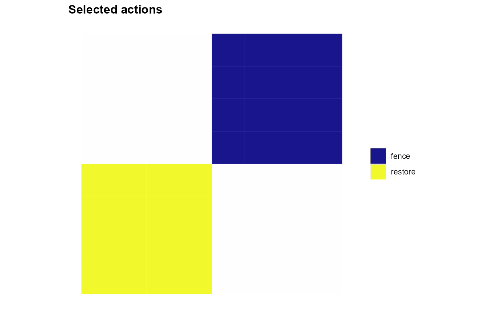
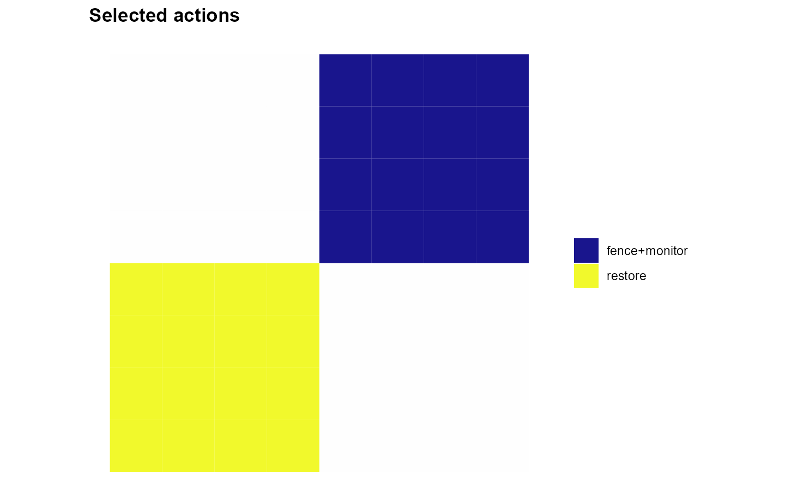
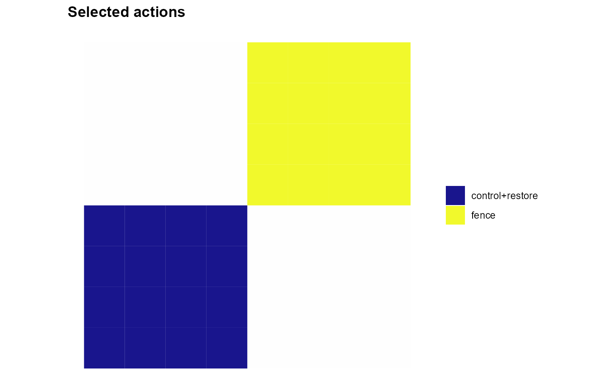

Planning with concurrent management actions
Source:vignettes/Planning_with_concurrent_actions.Rmd
Planning_with_concurrent_actions.RmdA planning unit can support more than one management intervention. For example, restoration may be combined with threat control, whereas two alternative uses may be incompatible. Concurrent-action planning represents each feasible planning-unit–action pair as an individual decision, then specifies which combinations are allowed and how their effects are evaluated.
This vignette brings together three complementary parts of
multiscape:
| Question | Function | What it changes |
|---|---|---|
| Which combinations do we want to identify? | add_action_sets() |
Registers memberships, not decisions or constraints |
| How many actions can be selected in a unit? | add_constraint_action_cardinality() |
Minimum, maximum, or exact counts |
| Which actions depend on or exclude others? |
add_constraint_action_requires(),
add_constraint_action_excludes(),
add_constraint_action_together()
|
Logical compatibility within each unit |
A registered action set is not an additional selectable
action. Actions remain the individual decisions. Moreover,
registering a set does not require its members to be implemented
together. This distinction becomes especially important when describing
joint ecological effects with add_effects().
1. Start from one spatial landscape
We use the 64-unit grid supplied with
load_sim_multiaction(), including its planning-unit
geometries and two ecological features. To illustrate the action rules,
we define four hypothetical interventions and spatially varying
economic returns. These returns are teaching
assumptions, not observations or ecological estimates from the simulated
dataset.
sim <- load_sim_multiaction()
# A common catalogue: each action is a separate binary decision in a unit.
actions <- data.frame(
id = c("restore", "control", "fence", "monitor")
)
# Two illustrative opportunity areas in the 8-by-8 landscape.
southwest <- with(sim$planning_units, x < 4 & y < 4)
northeast <- with(sim$planning_units, x > 4 & y > 4)
# Assign a return to every planning-unit--action pair.
returns <- expand.grid(
pu = sim$planning_units$id,
action = actions$id,
KEEP.OUT.ATTRS = FALSE,
stringsAsFactors = FALSE
)
idx <- match(returns$pu, sim$planning_units$id)
returns$profit <- -3 # No intervention is preferred outside opportunity areas.
returns$profit[returns$action == "restore" & southwest[idx]] <- 8
returns$profit[returns$action == "control" & southwest[idx]] <- -2
returns$profit[returns$action == "fence" & northeast[idx]] <- 7
returns$profit[returns$action == "monitor" & northeast[idx]] <- 4
# Build the problem without any special action-selection rules.
raw <- create_problem(
pu = sim$planning_units,
features = sim$features,
dist_features = sim$dist_features,
cost = "cost"
) |>
add_actions(actions, cost = 1) |>
add_profit(returns)The spatial patterns make the examples interpretable: restoration has a positive return in the south-west, while its companion threat-control action has a negative return. Fencing and monitoring have positive returns in the north-east. Outside these areas all returns are negative. The subsequent gross-profit objective does not deduct implementation costs; we use those costs only to illustrate that costs and returns are distinct inputs.
2. Name combinations with action sets
Action sets identify combinations of existing actions. A member may occur in more than one set, but sets do not contain other sets.
base <- raw |>
add_action_sets(list(
restore_control = c("restore", "control"),
restore_monitor = c("restore", "monitor"),
fence_monitor = c("fence", "monitor")
))
# Membership is a compact table; no new decision variable has been added.
get_action_sets(base)
#> set action
#> 1 fence_monitor fence
#> 2 fence_monitor monitor
#> 3 restore_control control
#> 4 restore_control restore
#> 5 restore_monitor monitor
#> 6 restore_monitor restoreThe equivalent long-table input has one row per membership:
memberships <- data.frame(
set = c("restore_control", "restore_control",
"restore_monitor", "restore_monitor",
"fence_monitor", "fence_monitor"),
action = c("restore", "control", "restore", "monitor", "fence", "monitor")
)
alternative <- add_action_sets(raw, memberships)Both formats describe the same memberships. Here,
restore belongs to two sets, illustrating that membership
is many-to-many. Register sets after registering their
individual member actions. Each set must contain at least two distinct
members, and its identifier cannot duplicate an action identifier.
Reusing a set identifier or membership is rejected.
Crucially, base still allows at most one action
per planning unit. Merely registering
restore_control does not permit or enforce concurrent
selection.
3. Change the number of actions allowed in each unit
The default is zero or one selected action per unit. To permit concurrent interventions, set a higher total maximum:
concurrent <- base |>
add_constraint_action_cardinality(2, "max", name = "two_per_unit")count applies separately to each unit,
not to all units combined. The three available senses are:
sense |
Interpretation in each scoped unit |
|---|---|
"min" |
Select at least count actions |
"max" |
Select at most count actions |
"equal" |
Select exactly count actions |
More specific limits may cover different units or action subsets:
# Up to two actions in the south-west, but the default one elsewhere.
local_capacity <- base |>
add_constraint_action_cardinality(
2, "max", pu = sim$planning_units$id[southwest]
)
# Allow two in total, but at most one of restoration or control.
subset_capacity <- base |>
add_constraint_action_cardinality(2, "max") |>
add_constraint_action_cardinality(
1, "max", actions = c("restore", "control")
)
# Exactly two actions in each south-west unit.
exact_two <- base |>
add_constraint_action_cardinality(
2, "equal", pu = sim$planning_units$id[southwest]
)An explicit total maximum or equality overrides the implicit one-action limit for the units it covers. A lower bound alone, or a bound restricted to an action subset, does not. Thus, to require at least two actions, first permit two or more with a total maximum. Distinct rules accumulate; a subsequent rule does not erase an earlier one.
4. Specify dependencies and compatibility
Allowing two actions does not mean that every combination is appropriate. Three functions encode the relevant logical relationships:
-
add_constraint_action_requires(): a selected trigger needs its companion(s);sense = "all"requires every companion andsense = "any"requires at least one. -
add_constraint_action_excludes(): at most one action from the specified group may be selected. -
add_constraint_action_together(): all actions in the group must be selected together, or all must remain unselected.
Consider only restore (R) and control (C).
The table shows combinations that each individual rule
permits:
| Rule | Neither | R only | C only | R + C |
|---|---|---|---|---|
| Default maximum 1 | Yes | Yes | Yes | No |
| Total maximum 2 | Yes | Yes | Yes | Yes |
| Maximum 2 + R requires C | Yes | No | Yes | Yes |
| Maximum 2 + R excludes C | Yes | Yes | Yes | No |
| Maximum 2 + R together with C | Yes | No | No | Yes |
All three relations are within-unit rules: a companion selected in one unit cannot fulfil a requirement in another. None of these rules forces its actions to be selected unless another constraint or a fixed decision does so.
Directional requirements and alternatives
# Whenever restoration is chosen in a south-west unit, control is required.
dependent <- concurrent |>
add_constraint_action_requires(
actions = "restore", requires = "control",
pu = sim$planning_units$id[southwest]
)
# A different example: either control or monitoring can accompany restoration.
flexible <- concurrent |>
add_constraint_action_requires(
actions = "restore", requires = c("control", "monitor"),
sense = "any", pu = sim$planning_units$id[southwest]
)A requirement is directional: choosing control alone
does not require restoration. If actions contains several
triggers, each trigger is checked independently. For
sense = "any", choosing both companions is also allowed,
provided cardinality permits it.
Exclusions and selection together
# Fencing and monitoring cannot be combined in north-east units.
exclusive <- concurrent |>
add_constraint_action_excludes(
c("fence", "monitor"), pu = sim$planning_units$id[northeast]
)
# Reuse the MEMBERS of a registered set, not the set identifier itself.
registered <- get_action_sets(base)
members <- registered$action[registered$set == "restore_control"]
joint_selection <- concurrent |>
add_constraint_action_together(
members, pu = sim$planning_units$id[southwest]
)excludes applies pairwise even if a group contains more
than two actions. together enforces both directions of a
dependency; it does not itself require that the group be selected. The
action-set identifier "restore_control" is
not a selectable action and therefore cannot be
supplied in place of members to these constraint
functions.
5. Compare three spatial prescriptions
We now solve three versions of the same economic problem, differing only in the action-selection rules. We maximise gross profit to make the effect of those rules transparent; this is not a multi-objective example.
# A: one action at most (the package default).
single <- base
# B: up to two actions in every unit.
# Positive-return actions may now be combined where advantageous.
# C: two actions allowed, but restoration needs control in the south-west;
# fencing and monitoring are incompatible in the north-east.
compatible <- concurrent |>
add_constraint_action_requires(
"restore", "control", pu = sim$planning_units$id[southwest]
) |>
add_constraint_action_excludes(
c("fence", "monitor"), pu = sim$planning_units$id[northeast]
)
models <- list(
single = single,
concurrent = concurrent,
compatible = compatible
)
solutions <- lapply(models, function(problem) {
problem |>
add_objective_max_profit(alias = "profit") |>
set_solver_cbc(time_limit = 30, verbose = FALSE) |>
solve()
})
# A concise comparison: objective values and selected action counts.
comparison <- do.call(rbind, lapply(names(solutions), function(label) {
result <- solutions[[label]]
selected <- get_actions(result, solution = 1)
selected <- selected[selected$selected > 0.5, , drop = FALSE]
counts <- table(factor(selected$action, levels = actions$id))
data.frame(
scenario = label,
profit = get_objectives(result, format = "wide")$profit[1],
restore = unname(counts["restore"]),
control = unname(counts["control"]),
fence = unname(counts["fence"]),
monitor = unname(counts["monitor"]),
row.names = NULL
)
}))
comparison
#> scenario profit restore control fence monitor
#> 1 single 240 16 0 16 0
#> 2 concurrent 304 16 0 16 16
#> 3 compatible 208 16 16 16 0The examples were constructed so the economic incentives are easy to follow. The default selects restoration in the south-west and fencing in the north-east. Permitting two actions adds monitoring alongside fencing where both have positive returns. Under the compatibility rules, restoration must also bring the otherwise unprofitable control action in the south-west, while fencing and monitoring cannot coexist in the north-east. Thus the three scenarios produce distinct action patterns. Unfavourable units remain unmanaged. With 16 units in each opportunity area, the expected gross-profit values are 240 (single), 304 (concurrent), and 208 (compatible). These values can be checked against the table above.
The following maps are generated directly by
plot_spatial_actions(). Its layout = "single"
mode displays concurrent selections with combined labels such as
restore+control; do not wrap this plotting function
in print().
plot_spatial_actions(solutions$single, layout = "single")
A. Default: at most one action in each planning unit.
plot_spatial_actions(solutions$concurrent, layout = "single")
#> Warning: More than one action detected in at least one PU. Labels were
#> collapsed using '+'.
B. Up to two actions: concurrent selections become possible.
plot_spatial_actions(solutions$compatible, layout = "single")
#> Warning: More than one action detected in at least one PU. Labels were
#> collapsed using '+'.
C. Action dependencies and exclusions restrict which concurrent choices are possible.
If the optional rcbc or ggplot2 package is
not installed, the models are still configured but the solver output and
figures are skipped when building this vignette.
6. Distinguish selecting a combination from describing its joint effect
So far, the objective used independent economic returns. A registered set can also identify a combination whose ecological effect differs from the sum of its individual effects.
For example, suppose restoration contributes a change of 0.10 in woodland and control contributes 0.05. Together, their hypothesised total change is 0.20 rather than 0.15. The additional 0.05 is an interaction, but the value registered for the set is the total, not the additional interaction:
joint_effects <- concurrent |>
add_effects(data.frame(
action = c("restore", "control", "restore_control"),
feature = "woodland",
effect = c(0.10, 0.05, 0.20)
))This use of "restore_control" is different from
supplying the set identifier to a selection constraint.
add_effects() uses it to describe the outcome when both
member actions are selected. By itself, add_effects() does
not compel them to be selected. Conversely,
add_constraint_action_together() imposes joint selection
but does not specify an ecological interaction.
For the representation of additive and non-additive effects, multiple features, and interaction corrections, continue with Joint effects and interactions between management actions.
7. Practical rules and common pitfalls
-
Scope.
pu = NULLmeans all currently registered units;pu = c(10, 20)applies a relation separately to each unit, not once across their union. - Implicit capacity. A subset minimum or maximum does not remove the default overall capacity of one action per unit. To allow a companion, first increase total cardinality.
-
Available pairs. A missing or locked-out feasible
pair is treated as an unavailable decision. A missing required companion
can prohibit its trigger; a missing member of a
togethergroup can prohibit the whole group. - Accumulating rules. Distinct cardinality constraints and logical relations are enforced simultaneously. Duplicate definitions or duplicate names can be rejected; later calls do not overwrite earlier rules.
- Infeasibility. Valid individual rules can conflict with one another, action locks, area requirements, or budgets. A higher cardinality maximum permits concurrency but never guarantees feasibility.
-
Economic versus ecological effects. Profit is the
sum of selected action-specific returns, whereas
add_effects()can account for non-additive ecological responses through registered combinations. A unit-level cost is charged once per selected unit; an action cost applies to each selected action when included in a cost-based objective.
The central distinction is between what may be selected (cardinality and logical relations), what a combination is called (action sets), and what happens when it is selected (ecological effects, costs, and profit).
See also add_actions(), add_constraint_locked_actions(),
and add_objective_max_profit().